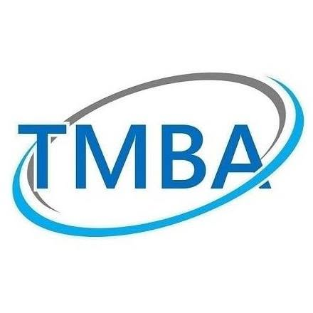

Liu, Yu-shan
About Me
My name is Yu-Shan Liu. I am naturally curious about new things and enjoy learning, exploring, and taking on new challenges.
I am currently pursuing a master’s degree in Electrical Engineering at NCKU, with a focus on machine learning and databases. In the future, I hope to pursue a career in AI, software, or firmware development. During my graduate studies, I have taken courses in ML, AI deployment and related fields, while gaining experience through practical projects.
Beyond my academic studies, I am passionate about industry and equity research. My experience in the semiconductor industry gives me a practical perspective on industry trends, while my interest in investment has led me to explore trading and IPO research.
Outside of learning and research, I enjoy staying active. I previously served as a leader in my university’s mountaineering club, where I participated in hiking activities and club operations. I also enjoy cycling and the sense of enjoyment and freedom that sports bring.
Work Experience
Macronix
In my work experience, I was primarily responsible for equipment maintenance and management, including routine maintenance, equipment troubleshooting, and functionality improvement. I also participated in projects focused on production process optimization, equipment stability, and cost reduction, working with cross-functional teams to improve equipment performance and production efficiency.
- Fab-Wide Equipment Performance Improvement Program — Improved the yield of a key product by 2%, generating approximately NT$10 million in annual cost savings, while maintaining monthly equipment utilization at 90% or above.
- Cost Down Program — Developed a quartz consumables recycling and cost optimization program, reducing monthly procurement expenses by approximately NT$300,000 (15%).
Education

National Cheng Kung University, NCKU
During my graduate studies, I focused primarily on machine learning and software development. I developed a strong understanding of the core principles behind deep learning algorithms and gained practical experience in model compression, performance optimization, and model deployment. In addition, driven by my strong interest in financial markets, I took courses in investment banking and investment strategies, where I learned about IPO analysis, corporate valuation, and financial markets.
- NCKU AI Summit Program — Interdisciplinary research on solar panel materials with the Departments of Photonics and Engineering Science.
- Machine Learning-Based Metabolite Screening Platform — ML-based platform for metabolite screening in cancer research.
- UAV Semantic Segmentation Competition — Deep learning model for aerial image segmentation; ranked 4th among 69 teams.

Tamkang University, TKU
During my undergraduate studies, I focused on aerospace engineering and took courses in electronics, control systems, and fluid mechanics. These experiences provided me with a solid engineering foundation and strengthened my problem-solving and analytical skills.
- Solar Power Monitoring System for a Green-Energy UAV, Project — Developed a system to monitor and analyze UAV power consumption during flight, determining optimal switching between solar and battery power to improve energy efficiency.
Activities

TMBA, ECM
- Conducted equity research on ASE Technology, analyzing semiconductor packaging and testing industry trends and competitive dynamics, and evaluating the company's growth drivers and leading position among industry peers.
- Extended the industry research to identify potential investment opportunities in APT Technology, analyzing its technological advantages, market demand, and growth potential driven by advanced warpage solutions.

Mountain Climbing Club, TKU
- Led four trekking trips, overseeing pre-trip planning, team coordination, and emergency response.
- Designed and delivered training in mountaineering skills, preparing junior members to lead trips independently.
Projects
DEM Screener — ML-Based Metabolite Screening Platform
A web-based platform that applies machine learning (AUC, Feature Importance, Fold Change, and statistical significance testing) to screen large pools of unvalidated metabolite data, prioritizing candidate metabolites potentially associated with cancer and narrowing down the scope for downstream experimental validation.
UAV Semantic Segmentation Competition
Developed a deep learning semantic segmentation model to classify objects in UAV aerial images, including trees, roads, buildings, and vehicles; ranked 4th on the private leaderboard among 69 teams.
NCKU AI Summit Program
We are currently collecting data on various environmental and structural factors, including light exposure, molecular structure, humidity, and illuminance.
ASE Technology ( 3711.TW ) - Equity Research Report
This is an equity research report on ASE Technology, covering the semiconductor packaging & testing industry, the company's competitive advantages, and its growth drivers.
APT ( 7734.TWO ) - Equity Research Report
This is an equity research report on APT, covering an industry overview, the company's competitive advantages, and its growth drivers.
Volatility Dashboard
This is a volatility dashboard for the TAIEX Index and Taiwan Index Futures, designed to assess overall market volatility and support strategy evaluation. More market data and indicators will be continuously incorporated to provide broader insights into market dynamics and enhance strategy analysis.
Click to open ↗